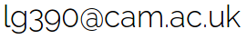

Computational Proteomics Unit
About
The Computational Proteomics Unit was set up in August 2013 and is part of the Cambridge Centre for Proteomics. Its main activities centre around the sound analysis of proteomics data and integration of different sources of heterogeneous data. We work in close collaboration with biologists to tackle biologically challenging questions using statistics and machine learning to understand the data and uncover biologically relevant patterns. The development and publication of scientific software is an integral part of our work and is reflected by our contributions to the Bioconductor project.
Keywords – data analysis, experimental design, statistics, programming, R, scientific software, machine learning, reproducible research, proteomics.
Members
Dr Laurent Gatto, head of the unit. Laurent moved to Cambridge in January 2010 to work in the Cambridge Centre for Proteomics on various aspects of quantitative and spatial proteomics, developing methodological advances and implementing computational tools with a strong emphasis on rigourous and reproducible data analysis. He is also a visiting scientist in the PRIDE team at the European Bioinformatics Institute and and affiliate teaching staff at the Cambridge Computational Biology Institute.
Dr Lisa M. Breckels, Post-Doctoral Research Associate. Lisa joined the Cambridge Centre for Proteomics in November 2010 to work on the application of machipne learning techniques to the sub-cellular localisation of proteins using quantitative experimental organelle proteomics. She joined the CPU in August 2013.
Former members
Mr Thomas Naake, undergraduate student. Thomas visited the group in Spring 2014 as an ERASMUS student affiliated to the University of Freiburg. He developed pRolocGUI, an interactive visualisation tools for organelle proteomics data.
Collaborators
Dr Sebastian Gibb, Statistics and Computational Biology group at the University Leipzig.
Dr Thomas Burger, CEA Grenoble, France.
Dr Christophe Dessimoz, University College London, UK.
Selected publications
Gatto L., Breckels L.M., Burger T,
Nightingale D.J.H., Groen A.J., Campbell C., Mulvey C.M., Christoforou
A., Ferro M., Lilley K.S. A foundation for reliable spatial
proteomics data analysis
, Mol Cell Proteomics. 2014 May 20.
(publisher,
software)
Gatto L., Breckels L.M, Burger T,
Wieczorek S. and Lilley K.S. Mass-spectrometry based
spatial proteomics data analysis using pRoloc and pRolocdata
,
Bioinformatics, 2014
(software,
PubMed,
publisher
under OA license).
Groen A., Sancho-Andrés G., Breckels
LM., Gatto L., Aniento F. and Lilley
K.S. Identification of Trans Golgi Network proteins
in Arabidopsis thaliana root tissue
Journal of Proteome
Research, 2013
(PubMed,
publisher).
Gatto L. and Christoforou A.
Using R and Bioconductor for proteomics data analysis
,
Biochim Biophys Acta - Proteins and Proteomics, 2013.
(PubMed,
pre-print,
software: Bioconductor
- github)
Bond N.J., Shliaha P.V, Lilley K.S. and Gatto L.
Improving qualitative and quantitative performance for
MSE-based label free proteomics
, J. Proteome
Res., 2013
(PubMed, publisher, software).
Breckels L.M., Gatto L., Christoforou A.,
Groen A.J., Lilley K.S. and Trotter M.W.B.
The Effect of Organelle Discovery upon Sub-Cellular Protein Localisation
, Journal of Proteomics, 2013 (PubMed, software).
Gatto L. and Lilley K.S.
MSnbase - an R/Bioconductor package for isobaric tagged mass
spectrometry data visualisation, processing and
quantitation
,
Bioinformatics, 28(2), 288-289, 2012 (PubMed - pdf - software).
Lilley K.S., Deery M.J. and Gatto L.
Challenges for Proteomics Core Facilities
,
Proteomics, 11: 1017-1025, 2011 (PubMed - pdf).
Gatto L., Vizcaíno J.A., Hermjakob H., Huber W. and Lilley K.S.
Organelle proteomics experimental designs and analysis
Proteomics, 10:22, 3957-3969, 2010 (PubMed - publisher - pdf).
Support
CPU acknowledges the support from the following funding bodies
Contact
Computational Proteomics Unit
Cambridge Centre for Proteomics
Cambridge System Biology Centre
University of Cambridge
Tennis Court Road
Cambridge, CB2 1GA, UK
Laurent Gatto

+44 (0) 1223 760253